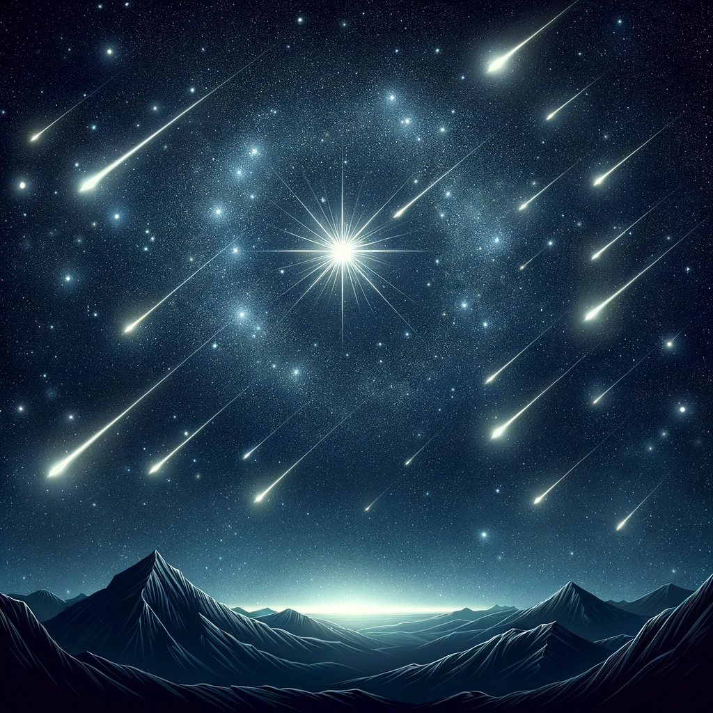

Punkt radiacyjny roju znajduje się na granicy konstelacji Lutni i Herkulesa.
Okres aktywności roju przypada między 16 a 25 kwietnia,
z największą intensywnością obserwowaną w okolicach 21-22 kwietnia (maksimum).

Meteoroidy Lirydów poruszają się z prędkością 49 km/s, co czyni je stosunkowo szybkimi zjawiskami.
Rój Lirydów jest jednym z najstarszych obserwowanych rojów meteorów, o którym wspominają starożytne kroniki.
Pierwsze wzmianki o jego aktywności można znaleźć już w chińskich zapisach datowanych na rok 2000 p.n.e.